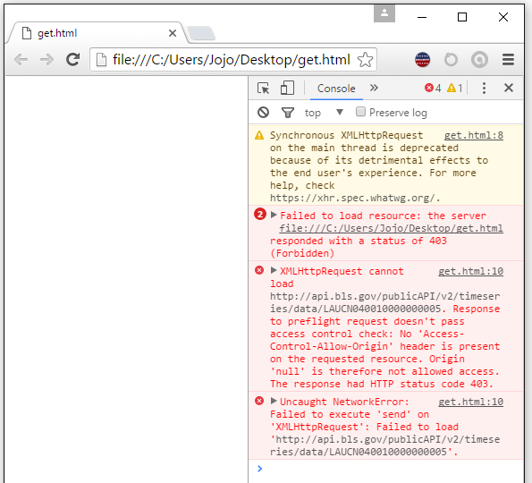

Getting Started
Before we jump into this API, we need to cover a few things.
Registration Key
You can use the BLS API without signing up for a registration key, but you will be limited to the older version of the API, as well as limited in the number of requests per day. Since registering is easy and unintrusive, it's better to go ahead and get a registration key by signing up with your email and name or organization name. Later, you will use this registration key in requests to the API.

Sending Requests and Receiving Data in Responses
The BLS API accepts RESTful signatures with either GET or POST HTTP type. The base URL that you will use is http://api.bls.gov/publicAPI/v2/timeseries/data/ . See the code example for a very simple GET request below:
var baseURL = 'http://api.bls.gov/publicAPI/v2/timeseries/data/';
var seriesID = 'LAUCN040010000000005';
var signature = baseURL + seriesID;
var req = new XMLHttpRequest();
req.open("GET", signature, false);
req.send(null);
console.log(JSON.parse(req.responseText));
The BLS API sends responses in one of two forms. One is XLSX, which we won't cover in much detail here, but can be downloaded in the client browser. The other format, which we will deal with primarily, is JSON format. JSON, or JavaScript Object Notation, is a standardized object format for transferring data. Notably, it consists of attribute-value pairs in which the attribute consists of a string. Below is an example of a JSON object returned by the BLS API:
{"status":"REQUEST_SUCCEEDED",
"responseTime":34,
"message":[],
"Results":{
"series": [
{"seriesID":"LAUCN040010000000005",
"data":[
{"year":"2015",
"period":"M12",
"periodName":"December",
"value":"17654",
"footnotes":[{ "code":"R",
"text":"Data were subject to revision on April 15, 2016."}]},
{"year":"2015",
"period":"M11",
"periodName":"November",
"value":"17765",
"footnotes":[{ "code":"R",
"text":"Data were subject to revision on April 15, 2016."}]}
]}
]
}}
Developers can then parse this data in order to extract useful parts, for example, so generate a graph of values over a range of time. BLS API JSON objects have predictable parts, which we'll jump more into interpreting when we get to responses.
A Note About An Issue
CORS, also known as Cross Origin Resource Sharing, is an issue using this API. You can read more about CORS, a security measure to limit cross-domain requests here. Unfortunately, setting the access control header using req.setRequestHeader("Access-Control-Allow-Origin", "*"); will not work for the BLS API (but will for some other APIs). An option that will work but is very limited is using Internet Explorer as a browswer (but obviously this is not always an option!). Here is an example of the errors you will see:
